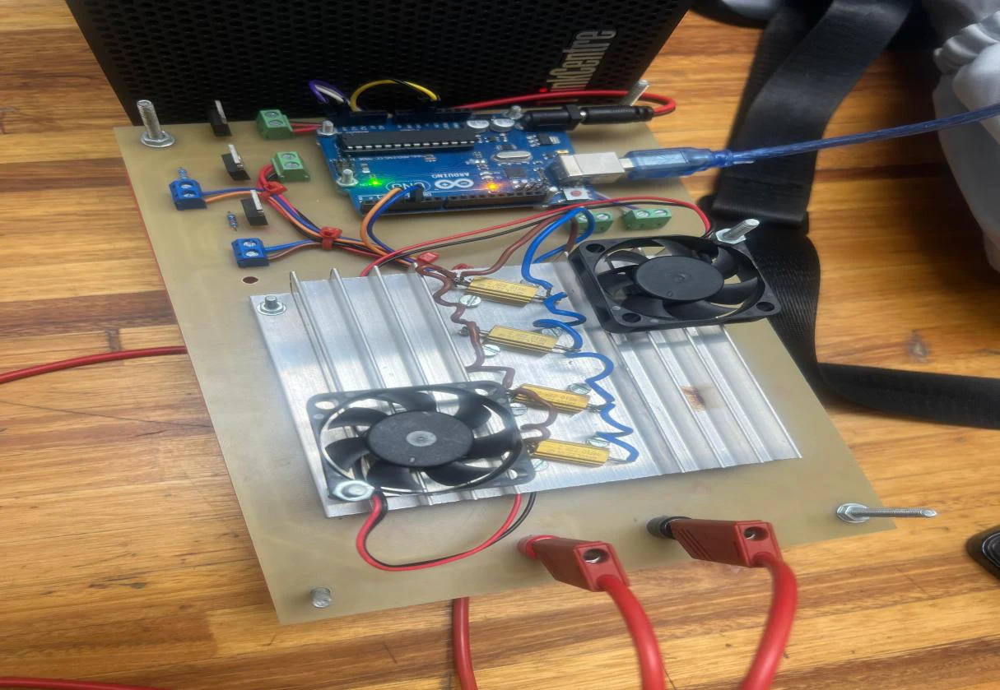
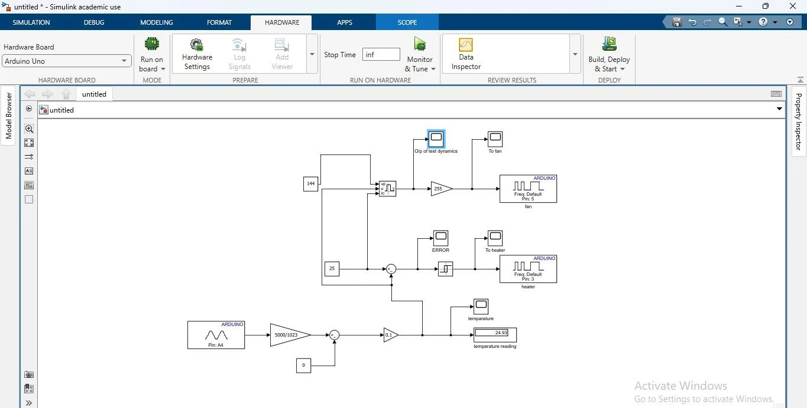
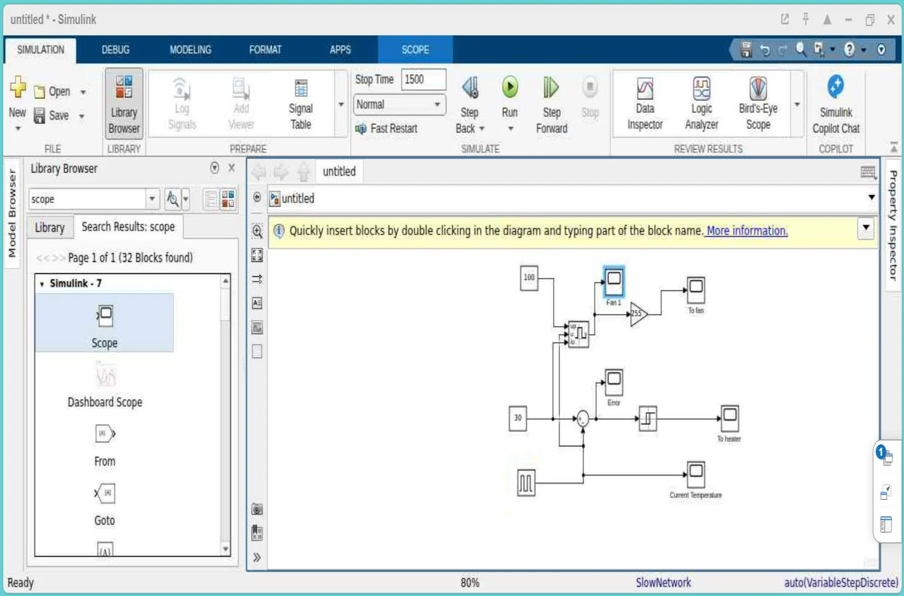
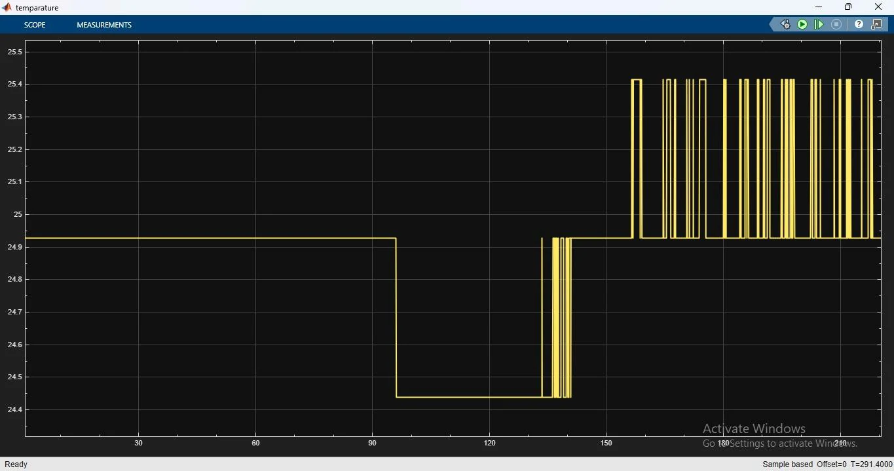

Feedback & hysteresis
The controller compares the temperature reading with the requested setpoint. A 2°C deadband helps prevent unnecessary ON/OFF switching. The report describes additional fan-speed response when temperature exceeds the target.
Design, simulation and hardware implementation of a closed-loop temperature controller using MATLAB/Simulink, Arduino Uno, an LM35 temperature sensor and a heating/cooling arrangement. The project examines ON/OFF control with a ±2°C hysteresis band and observes how the system responds to changing temperature.

The controller compares the temperature reading with the requested setpoint. A 2°C deadband helps prevent unnecessary ON/OFF switching. The report describes additional fan-speed response when temperature exceeds the target.
The team first developed Simulink control logic and then documented an Arduino-based practical arrangement. The report provides modelling screenshots, hardware photographs, test scopes and discussion of noise and controller limitations.
Images extracted from the original project report. These are photographs and screenshots of the team's work, not AI-generated substitutes.




In the team's report, temperature was sampled from the LM35, compared to a setpoint, and used to control heater and fan outputs. The group discussed simulation results and practical waveforms, along with sensor noise, switching delay and the limits of simple ON/OFF control.
.slx file is a compact model containing constants 30 and 100 and scope/relay logic; it is not the full Arduino hardware project or a complete match to every setting described in the report. These differences are disclosed rather than reconciled without evidence.The interactive demo is an illustrative JavaScript thermal system, not an execution of the original Simulink file and not connected to physical hardware. No Arduino sketch was included in the supplied ZIP.